Examples#
This folder contains a collection of Jupyter notebooks that demonstrate how to use PyBaMM and reveal some of its functionalities and inner workings. The notebooks are organised into subfolders, and can be viewed in the galleries below.
開始使用
Tutorial 1 - How to run a model
Tutorial 2 - Compare models

Tutorial 3 - Basic plotting
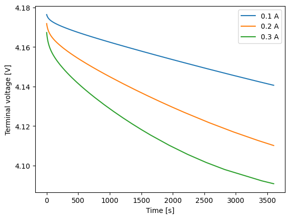
Tutorial 4 - Setting parameter values
Tutorial 4b: Parameter Introspection and Comparison
Tutorial 5 - Run experiments
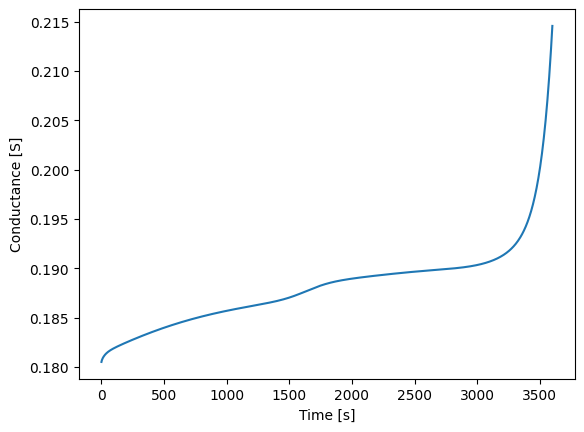
Tutorial 6 - Managing simulation outputs
Tutorial 7 - Model options
Tutorial 8 - Solver options
Tutorial 9 - Changing the mesh
創建模型

效能

Understanding the PyBaMM pipeline and performance profile of the Simulation class
Using Input Parameters to efficiently re-run simulations with different parameters
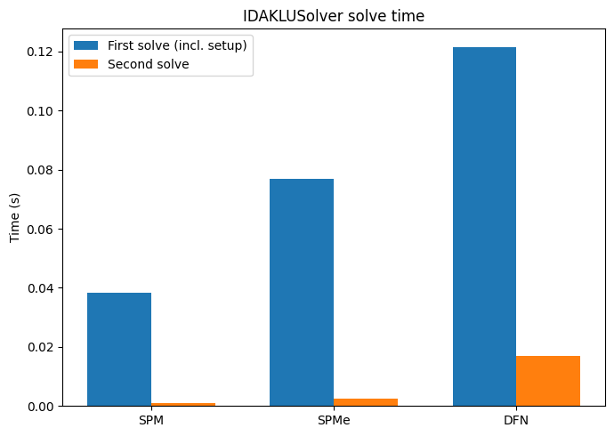
The PyBaMM Solvers
Interpolation and evaluation points
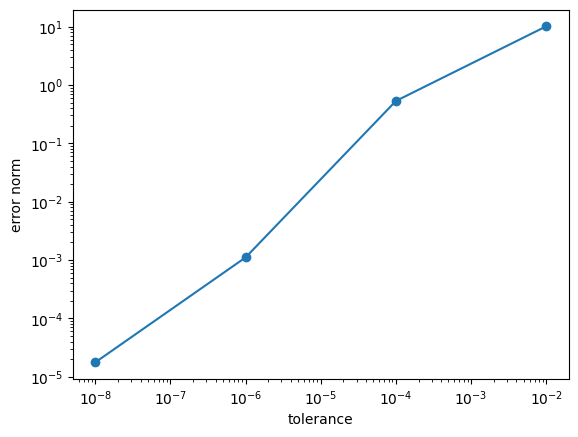
Solver tolerances
Defining output variables to reduce memory usage
Running many simulations in parallel using OpenMP
Expression Tree
Models
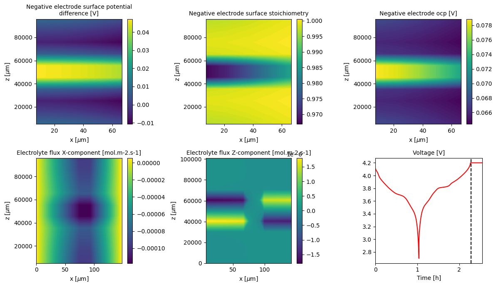
BasicDFN2D: simulating in-plane electrolyte flows
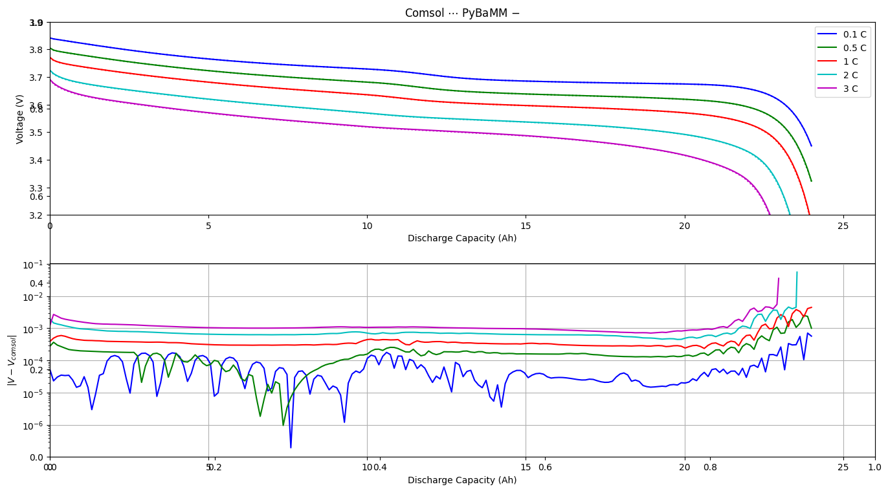
Comparison of PyBaMM and COMSOL Discharge Curves
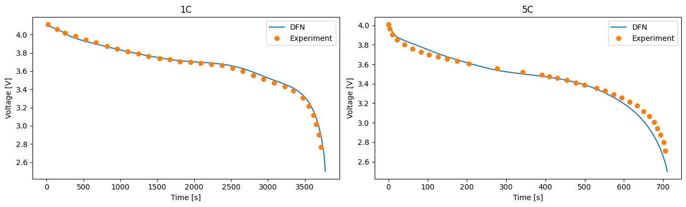
Comparing with Experimental Data
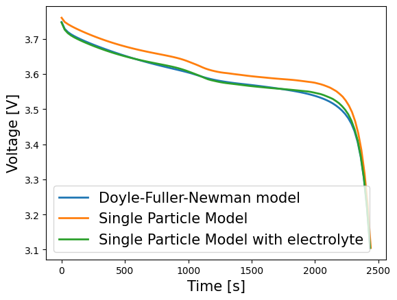
Compare lithium-ion battery models
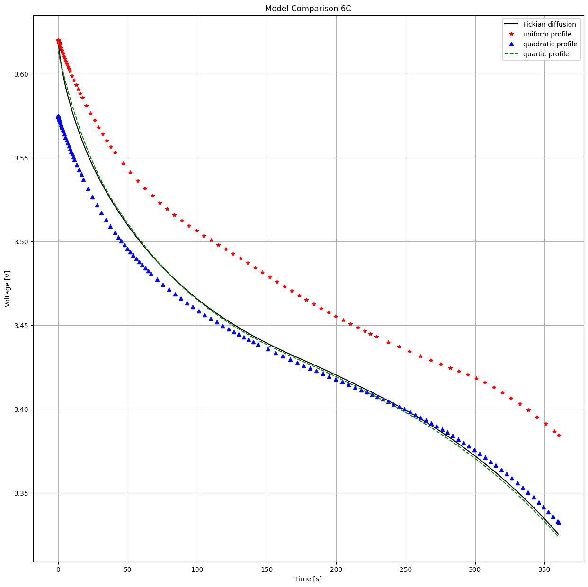
Compare particle diffusion models
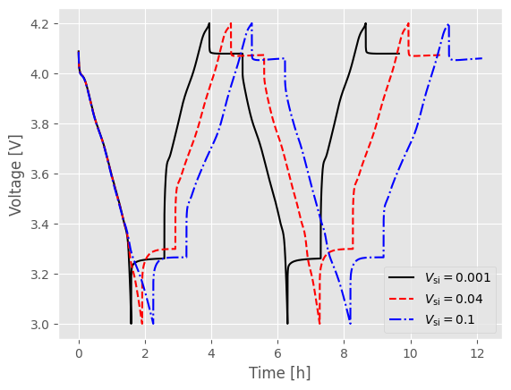
A composite electrode particle model

Modelling coupled degradation mechanisms in PyBaMM
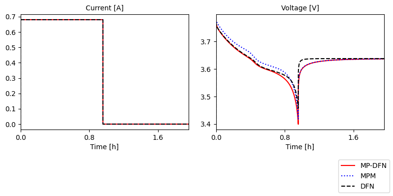
Doyle-Fuller-Newman Model with particle-size distributions
Doyle-Fuller-Newman Model (DFN)
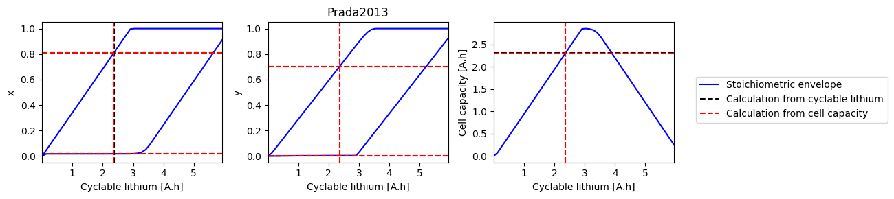
Electrode State of Health
Simulating graded electrodes
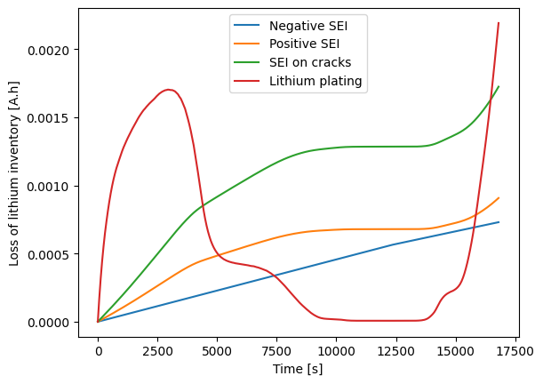
Half-cell models in PyBaMM
Hysteresis State models
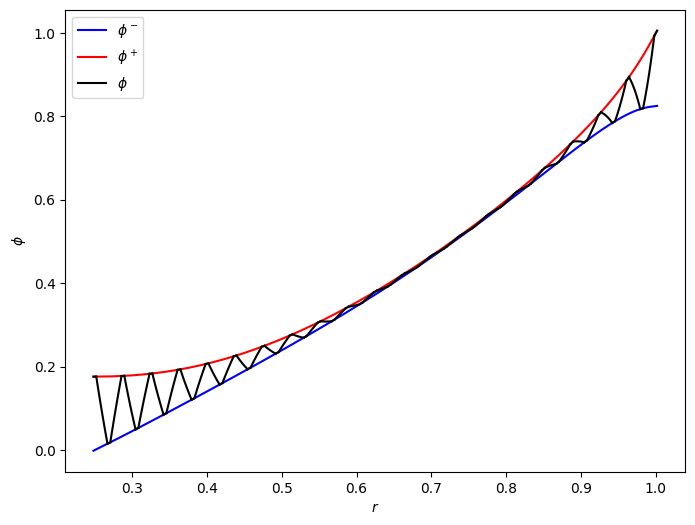
Jelly roll model

Using latexify in PyBaMM
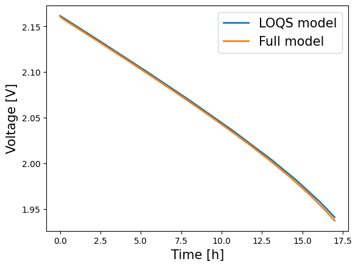
Lead-Acid Models
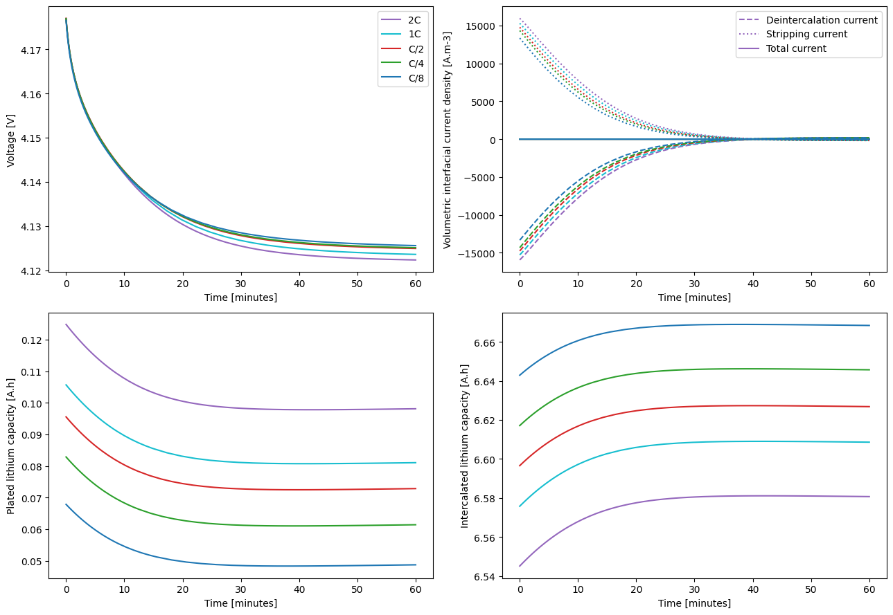
Modelling lithium plating in PyBaMM

Modelling lithium plating on composite electrodes in PyBaMM

Many Particle Model (MPM)

Multi-Species Multi-Reaction model
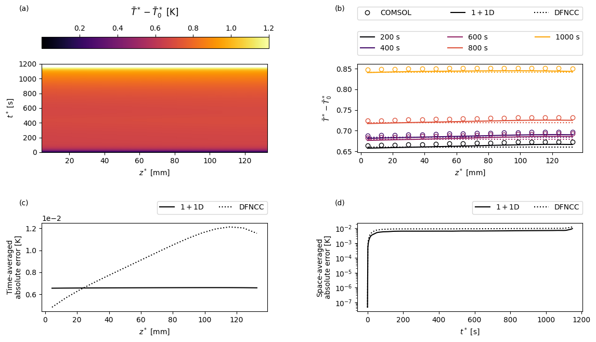
Pouch cell model
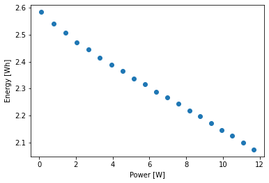
Generate rate capability plots
Saving PyBaMM models to file
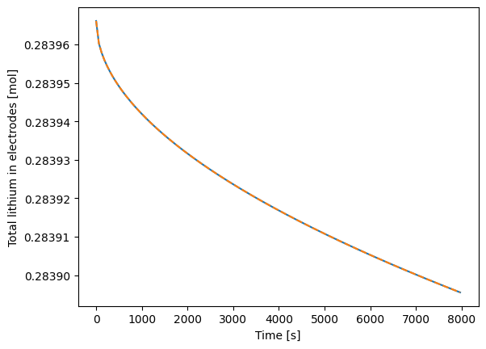
Modelling SEI growth on particle cracks
Simulating a 3E cell
Run simulations with O’Regan 2022 parameter set (LG M50)
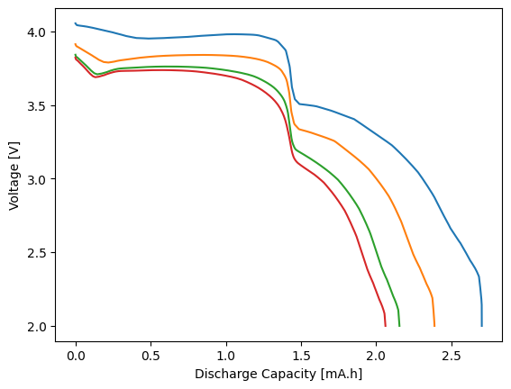
DFN model for sodium-ion batteries
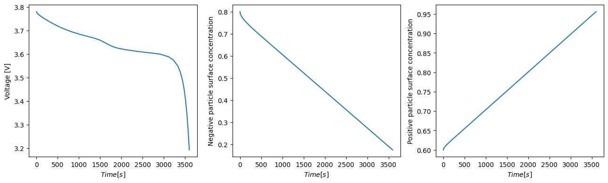
Single Particle Model (SPM)
Single Particle Model with Electrolyte (SPMe)
Using crack submodels in PyBaMM
Loss of active material submodels
Thermal models
Transport efficiency and the models for tortuosity factor
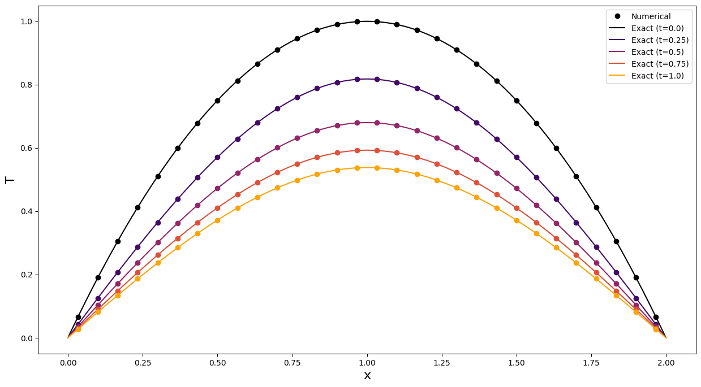
Solving the heat equation in PyBaMM
Using model options in PyBaMM
Using submodels in PyBaMM
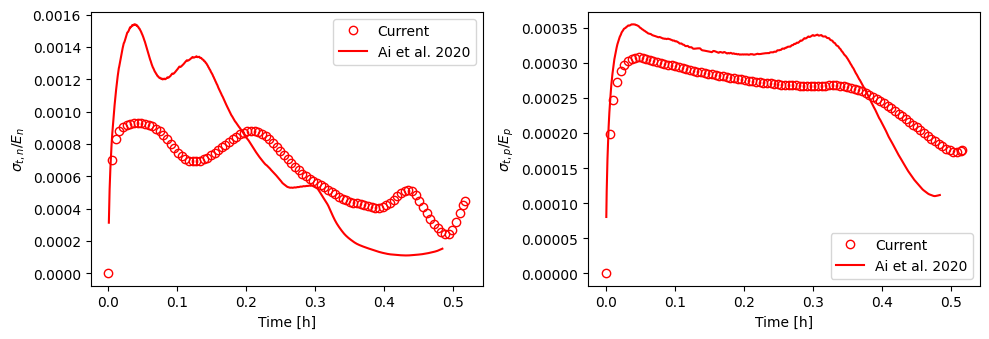
Test the parameter set of the Enertech cells
Parameterization


Simulations and Experiments
Callbacks
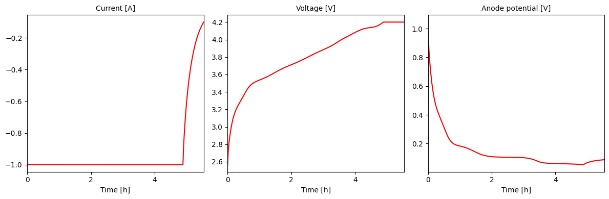
Custom experiments
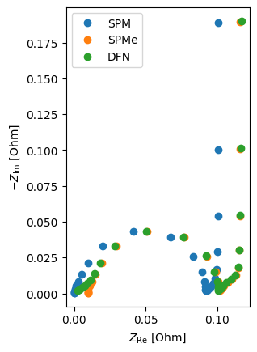
EIS Simulation
Experiments with start_time

Accounting for formation or storage loss in PyBaMM simulations
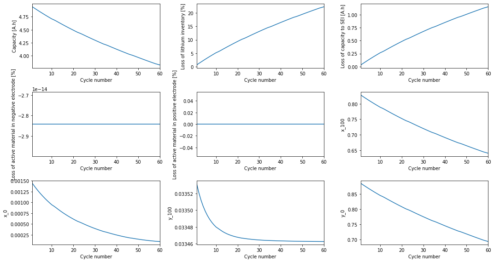
Degradation experiments with reference performance tests

Simulating long experiments
A step-by-step look at the Simulation class

Solvers
Spatial Methods